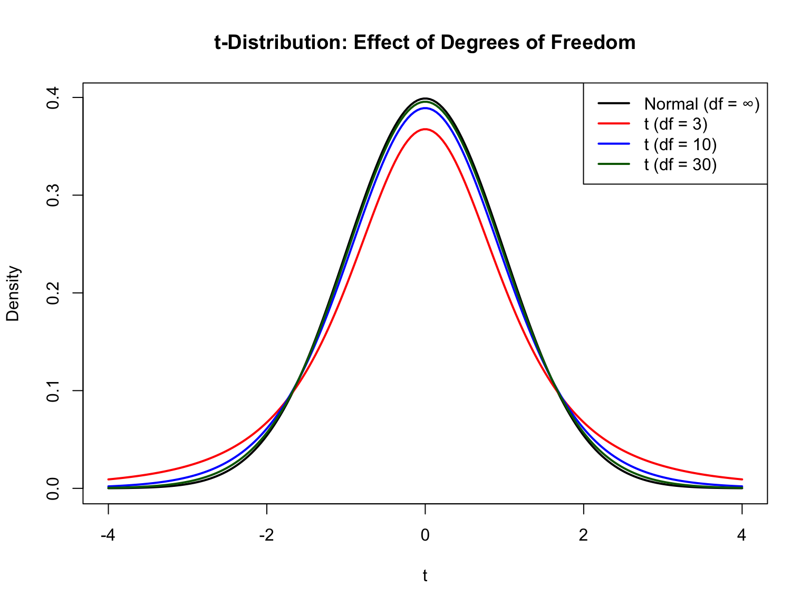

This appendix provides a reference for the statistical distributions used in hypothesis testing. While Chapter 29 covers probability distributions for modeling data, this appendix focuses on sampling distributions—the theoretical distributions that test statistics follow under the null hypothesis.
31.1 Why Sampling Distributions Matter
When we conduct a hypothesis test, we calculate a test statistic from our sample data. To determine whether this statistic is “unusual,” we need to know what values to expect if the null hypothesis were true. The sampling distribution tells us exactly this—it’s the distribution of the test statistic across all possible samples.
Code
# Demonstrate: sampling distribution of the meanset.seed(42)population <-rnorm(100000, mean =100, sd =15)# Take many samples and compute meanssample_means <-replicate(5000, mean(sample(population, 30)))hist(sample_means, breaks =40, col ="lightblue",main ="Sampling Distribution of the Mean",xlab ="Sample Mean (n = 30)",probability =TRUE)# Overlay theoretical normalx <-seq(min(sample_means), max(sample_means), length.out =100)lines(x, dnorm(x, mean =100, sd =15/sqrt(30)), col ="red", lwd =2)legend("topright",legend =c("Simulated", "Theoretical"),fill =c("lightblue", NA),border =c("black", NA),lty =c(NA, 1), lwd =c(NA, 2),col =c(NA, "red"))
31.2 The Standard Normal (Z) Distribution
31.2.1 When It’s Used
The standard normal distribution is used when:
Testing means with known population variance
Large samples (n > 30) where CLT applies
Testing proportions with large samples
31.2.2 The Distribution
\[Z = \frac{\bar{X} - \mu}{\sigma / \sqrt{n}}\]
Under \(H_0\), \(Z \sim N(0, 1)\)
Code
x <-seq(-4, 4, length.out =200)y <-dnorm(x)plot(x, y, type ="l", lwd =2,xlab ="z", ylab ="Density",main ="Standard Normal Distribution")# Shade rejection regions (two-tailed, α = 0.05)x_left <-seq(-4, -1.96, length.out =50)x_right <-seq(1.96, 4, length.out =50)polygon(c(-4, x_left, -1.96), c(0, dnorm(x_left), 0),col =rgb(1, 0, 0, 0.3), border =NA)polygon(c(1.96, x_right, 4), c(0, dnorm(x_right), 0),col =rgb(1, 0, 0, 0.3), border =NA)abline(v =c(-1.96, 1.96), lty =2, col ="red")text(0, 0.15, "95%\nAcceptance\nRegion", cex =0.9)text(-2.8, 0.05, "2.5%", col ="red")text(2.8, 0.05, "2.5%", col ="red")
31.2.3 Critical Values
Confidence Level
Two-tailed α
Critical Z
90%
0.10
±1.645
95%
0.05
±1.960
99%
0.01
±2.576
Code
# R functions for Z distributionqnorm(0.975) # 97.5th percentile (for two-tailed 95% CI)
[1] 1.959964
Code
pnorm(1.96) # Probability below z = 1.96
[1] 0.9750021
31.3 Student’s t-Distribution
31.3.1 When It’s Used
The t-distribution is used when:
Testing means with unknown population variance (estimated from sample)
Comparing two means (two-sample t-test)
Testing regression coefficients
Small to moderate sample sizes
31.3.2 The Distribution
\[t = \frac{\bar{X} - \mu}{s / \sqrt{n}}\]
Under \(H_0\), \(t \sim t_{df}\) where \(df = n - 1\) for one-sample tests.
31.3.3 Effect of Degrees of Freedom
The t-distribution has heavier tails than the normal, reflecting additional uncertainty from estimating variance. As df increases, t approaches normal:
Code
x <-seq(-4, 4, length.out =200)plot(x, dnorm(x), type ="l", lwd =2, col ="black",xlab ="t", ylab ="Density",main ="t-Distribution: Effect of Degrees of Freedom")lines(x, dt(x, df =3), lwd =2, col ="red")lines(x, dt(x, df =10), lwd =2, col ="blue")lines(x, dt(x, df =30), lwd =2, col ="darkgreen")legend("topright",legend =c("Normal (df = ∞)", "t (df = 3)", "t (df = 10)", "t (df = 30)"),col =c("black", "red", "blue", "darkgreen"),lwd =2)

Notice how df = 3 has much heavier tails (more extreme values expected), while df = 30 is nearly indistinguishable from the normal.
# F distribution functionsqf(0.95, df1 =3, df2 =20) # Critical F for ANOVA
[1] 3.098391
Code
1-pf(3.5, df1 =3, df2 =20) # p-value for F = 3.5
[1] 0.0344931
31.6 Relationships Between Distributions
These distributions are mathematically related:
Key relationships:
t² = F(1, df): A squared t-statistic follows an F distribution with 1 numerator df
χ² → Normal: As df increases, chi-square approaches normality
t → Z: As df → ∞, t-distribution becomes standard normal
F(1, ∞) = χ²(1): Limiting case of F distribution
31.7 Choosing the Right Distribution
Test
Distribution
Degrees of Freedom
Z-test (known σ)
Normal
N/A
One-sample t-test
t
n - 1
Two-sample t-test
t
n₁ + n₂ - 2 (pooled)
Paired t-test
t
n - 1
Chi-square GOF
χ²
k - 1
Chi-square independence
χ²
(r-1)(c-1)
One-way ANOVA
F
k-1, N-k
Regression F-test
F
p, n-p-1
Regression coefficient
t
n - p - 1
where k = number of groups/categories, n = sample size, p = number of predictors
31.8 Degrees of Freedom: Intuition
Degrees of freedom represent the number of independent pieces of information available for estimation. They decrease when we estimate parameters from the data:
# Demonstration: Why df matters# Sampling distribution of sample variance with different nset.seed(42)true_variance <-100simulate_s2 <-function(n, reps =5000) {replicate(reps, var(rnorm(n, mean =0, sd =10)))}s2_small <-simulate_s2(5) # df = 4s2_medium <-simulate_s2(20) # df = 19s2_large <-simulate_s2(50) # df = 49par(mfrow =c(1, 3))hist(s2_small, breaks =30, main ="n = 5 (df = 4)",xlab ="Sample Variance", col ="lightblue", xlim =c(0, 400))abline(v =100, col ="red", lwd =2)hist(s2_medium, breaks =30, main ="n = 20 (df = 19)",xlab ="Sample Variance", col ="lightblue", xlim =c(0, 400))abline(v =100, col ="red", lwd =2)hist(s2_large, breaks =30, main ="n = 50 (df = 49)",xlab ="Sample Variance", col ="lightblue", xlim =c(0, 400))abline(v =100, col ="red", lwd =2)
With more degrees of freedom: - Variance estimates are more precise (narrower distribution) - More likely to be close to the true value - Critical values move closer to their limiting values
31.9 Summary
Distribution
Parameters
Mean
Use For
Normal (Z)
None
0
Means (known σ), proportions
t
df
0
Means (unknown σ), regression
Chi-square
df
df
Frequencies, variance, GOF
F
df₁, df₂
df₂/(df₂-2)
ANOVA, comparing variances
Remember: - More data (higher df) → distributions approach their limits - The t approaches Z, χ² becomes symmetric, F becomes more peaked - Heavier tails in t and F require larger critical values for small df - These distributions assume normality of underlying data (robustness varies)
Source Code
# Sampling Distributions in Hypothesis Testing {#sec-sampling-distributions}```{r}#| echo: false#| message: falselibrary(tidyverse)theme_set(theme_minimal())```This appendix provides a reference for the statistical distributions used in hypothesis testing. While @sec-probability-distributions covers probability distributions for modeling data, this appendix focuses on **sampling distributions**—the theoretical distributions that test statistics follow under the null hypothesis.## Why Sampling Distributions MatterWhen we conduct a hypothesis test, we calculate a test statistic from our sample data. To determine whether this statistic is "unusual," we need to know what values to expect if the null hypothesis were true. The **sampling distribution** tells us exactly this—it's the distribution of the test statistic across all possible samples.```{r}#| fig-width: 8#| fig-height: 5# Demonstrate: sampling distribution of the meanset.seed(42)population <-rnorm(100000, mean =100, sd =15)# Take many samples and compute meanssample_means <-replicate(5000, mean(sample(population, 30)))hist(sample_means, breaks =40, col ="lightblue",main ="Sampling Distribution of the Mean",xlab ="Sample Mean (n = 30)",probability =TRUE)# Overlay theoretical normalx <-seq(min(sample_means), max(sample_means), length.out =100)lines(x, dnorm(x, mean =100, sd =15/sqrt(30)), col ="red", lwd =2)legend("topright",legend =c("Simulated", "Theoretical"),fill =c("lightblue", NA),border =c("black", NA),lty =c(NA, 1), lwd =c(NA, 2),col =c(NA, "red"))```## The Standard Normal (Z) Distribution### When It's UsedThe standard normal distribution is used when:- Testing means with **known** population variance- Large samples (n > 30) where CLT applies- Testing proportions with large samples### The Distribution$$Z = \frac{\bar{X} - \mu}{\sigma / \sqrt{n}}$$Under $H_0$, $Z \sim N(0, 1)$```{r}#| fig-width: 7#| fig-height: 5x <-seq(-4, 4, length.out =200)y <-dnorm(x)plot(x, y, type ="l", lwd =2,xlab ="z", ylab ="Density",main ="Standard Normal Distribution")# Shade rejection regions (two-tailed, α = 0.05)x_left <-seq(-4, -1.96, length.out =50)x_right <-seq(1.96, 4, length.out =50)polygon(c(-4, x_left, -1.96), c(0, dnorm(x_left), 0),col =rgb(1, 0, 0, 0.3), border =NA)polygon(c(1.96, x_right, 4), c(0, dnorm(x_right), 0),col =rgb(1, 0, 0, 0.3), border =NA)abline(v =c(-1.96, 1.96), lty =2, col ="red")text(0, 0.15, "95%\nAcceptance\nRegion", cex =0.9)text(-2.8, 0.05, "2.5%", col ="red")text(2.8, 0.05, "2.5%", col ="red")```### Critical Values| Confidence Level | Two-tailed α | Critical Z ||:-----------------|:-------------|:-----------|| 90% | 0.10 | ±1.645 || 95% | 0.05 | ±1.960 || 99% | 0.01 | ±2.576 |```{r}# R functions for Z distributionqnorm(0.975) # 97.5th percentile (for two-tailed 95% CI)pnorm(1.96) # Probability below z = 1.96```## Student's t-Distribution### When It's UsedThe t-distribution is used when:- Testing means with **unknown** population variance (estimated from sample)- Comparing two means (two-sample t-test)- Testing regression coefficients- Small to moderate sample sizes### The Distribution$$t = \frac{\bar{X} - \mu}{s / \sqrt{n}}$$Under $H_0$, $t \sim t_{df}$ where $df = n - 1$ for one-sample tests.### Effect of Degrees of FreedomThe t-distribution has heavier tails than the normal, reflecting additional uncertainty from estimating variance. As df increases, t approaches normal:```{r}#| fig-width: 8#| fig-height: 6x <-seq(-4, 4, length.out =200)plot(x, dnorm(x), type ="l", lwd =2, col ="black",xlab ="t", ylab ="Density",main ="t-Distribution: Effect of Degrees of Freedom")lines(x, dt(x, df =3), lwd =2, col ="red")lines(x, dt(x, df =10), lwd =2, col ="blue")lines(x, dt(x, df =30), lwd =2, col ="darkgreen")legend("topright",legend =c("Normal (df = ∞)", "t (df = 3)", "t (df = 10)", "t (df = 30)"),col =c("black", "red", "blue", "darkgreen"),lwd =2)```Notice how df = 3 has much heavier tails (more extreme values expected), while df = 30 is nearly indistinguishable from the normal.### Critical Values Change with df```{r}# Critical t-values for 95% CI (two-tailed)dfs <-c(5, 10, 20, 30, 50, 100, Inf)t_crits <-qt(0.975, df = dfs)data.frame(df = dfs,critical_t =round(t_crits, 3))```### Practical Implications```{r}#| fig-width: 8#| fig-height: 4# How confidence interval width depends on sample sizen_values <-seq(5, 100, by =5)ci_multipliers <-qt(0.975, df = n_values -1)plot(n_values, ci_multipliers, type ="b", pch =19, col ="blue",xlab ="Sample Size (n)", ylab ="t Critical Value (α = 0.05)",main ="Why Larger Samples Give Narrower CIs")abline(h =1.96, lty =2, col ="red")text(80, 2.05, "Z = 1.96 (infinite df)", col ="red")```With small samples, we need a larger critical value to achieve the same confidence level, making confidence intervals wider.### R Functions```{r}# t-distribution functionsqt(0.975, df =10) # Critical value for 95% CI with df = 10pt(2.228, df =10) # Probability below t = 2.228dt(0, df =10) # Density at t = 0```## Chi-Square (χ²) Distribution### When It's UsedThe chi-square distribution is used for:- Goodness of fit tests (observed vs. expected frequencies)- Tests of independence (contingency tables)- Testing variance (one population)- Model fit in regression (deviance tests)### The DistributionThe chi-square distribution is the sum of squared standard normal variables:$$\chi^2 = \sum_{i=1}^{k} Z_i^2$$The distribution is always positive and right-skewed. As df increases, it becomes more symmetric and approaches normality.```{r}#| fig-width: 8#| fig-height: 5x <-seq(0, 30, length.out =200)plot(x, dchisq(x, df =2), type ="l", lwd =2, col ="red",xlab =expression(chi^2), ylab ="Density",main =expression(paste(chi^2, " Distribution")),ylim =c(0, 0.3))lines(x, dchisq(x, df =5), lwd =2, col ="blue")lines(x, dchisq(x, df =10), lwd =2, col ="darkgreen")lines(x, dchisq(x, df =20), lwd =2, col ="purple")legend("topright",legend =c("df = 2", "df = 5", "df = 10", "df = 20"),col =c("red", "blue", "darkgreen", "purple"),lwd =2)```### Properties- **Mean**: $E[\chi^2] = df$- **Variance**: $Var(\chi^2) = 2 \times df$- Always positive (sums of squares)- Right-skewed, especially for small df### Critical Values for Common Tests```{r}# Chi-square critical values (right-tail, α = 0.05)dfs <-c(1, 2, 3, 5, 10, 20)chi_crits <-qchisq(0.95, df = dfs)data.frame(df = dfs,critical_chi_sq =round(chi_crits, 3),mean = dfs # Note: critical value is close to df + 2*sqrt(2*df))```### R Functions```{r}# Chi-square distribution functionsqchisq(0.95, df =5) # Critical value (right-tail α = 0.05)1-pchisq(11.07, df =5) # p-value for chi-square = 11.07dchisq(5, df =5) # Density at chi-square = 5```## F Distribution### When It's UsedThe F distribution is used for:- Comparing two variances (F-test)- ANOVA (comparing means of multiple groups)- Testing overall significance in regression- Comparing nested models### The DistributionThe F distribution is the ratio of two chi-square distributions:$$F = \frac{\chi^2_1 / df_1}{\chi^2_2 / df_2}$$- $df_1$: numerator degrees of freedom (between-groups)- $df_2$: denominator degrees of freedom (within-groups or error)```{r}#| fig-width: 8#| fig-height: 5x <-seq(0, 5, length.out =200)plot(x, df(x, df1 =1, df2 =10), type ="l", lwd =2, col ="red",xlab ="F", ylab ="Density",main ="F Distribution",ylim =c(0, 1))lines(x, df(x, df1 =5, df2 =10), lwd =2, col ="blue")lines(x, df(x, df1 =10, df2 =10), lwd =2, col ="darkgreen")lines(x, df(x, df1 =10, df2 =50), lwd =2, col ="purple")legend("topright",legend =c("F(1,10)", "F(5,10)", "F(10,10)", "F(10,50)"),col =c("red", "blue", "darkgreen", "purple"),lwd =2)```### Understanding F in ANOVAIn ANOVA, F is the ratio of between-group variance to within-group variance:$$F = \frac{MS_{between}}{MS_{within}} = \frac{\text{Signal}}{\text{Noise}}$$- Large F: Groups differ more than expected from random variation- F ≈ 1: Group differences are similar to within-group variation```{r}#| fig-width: 7#| fig-height: 5# Visualize rejection region for ANOVAx <-seq(0, 6, length.out =200)y <-df(x, df1 =3, df2 =20) # 4 groups, total n = 24plot(x, y, type ="l", lwd =2,xlab ="F", ylab ="Density",main ="F(3, 20) Distribution for One-Way ANOVA")# Critical value and rejection regionf_crit <-qf(0.95, df1 =3, df2 =20)x_reject <-seq(f_crit, 6, length.out =50)polygon(c(f_crit, x_reject, 6), c(0, df(x_reject, 3, 20), 0),col =rgb(1, 0, 0, 0.3), border =NA)abline(v = f_crit, lty =2, col ="red")text(f_crit +0.3, 0.3, paste("F* =", round(f_crit, 2)), col ="red")text(4.5, 0.05, "Rejection\nRegion\n(α = 0.05)", col ="red")```### Critical Values Table```{r}# F critical values for α = 0.05 (common ANOVA scenarios)# Rows: numerator df (groups - 1)# Columns: denominator df (total n - groups)df1_vals <-c(1, 2, 3, 4, 5)df2_vals <-c(10, 20, 30, 60, 120)f_table <-outer(df1_vals, df2_vals,function(d1, d2) round(qf(0.95, d1, d2), 2))rownames(f_table) <-paste("df1 =", df1_vals)colnames(f_table) <-paste("df2 =", df2_vals)cat("F Critical Values (α = 0.05)\n")print(f_table)```### R Functions```{r}# F distribution functionsqf(0.95, df1 =3, df2 =20) # Critical F for ANOVA1-pf(3.5, df1 =3, df2 =20) # p-value for F = 3.5```## Relationships Between DistributionsThese distributions are mathematically related:```{r}#| echo: false#| fig-width: 9#| fig-height: 6par(mar =c(1, 1, 2, 1))plot(1, type ="n", xlim =c(0, 10), ylim =c(0, 7), axes =FALSE,xlab ="", ylab ="", main ="Relationships Between Sampling Distributions")# Boxesrect(3.5, 5.5, 6.5, 6.5)text(5, 6, "Normal\nZ ~ N(0,1)", font =2, cex =0.9)rect(0.5, 3, 3.5, 4)text(2, 3.5, "Chi-Square\nχ² = ΣZ²", cex =0.9)rect(6.5, 3, 9.5, 4)text(8, 3.5, "t Distribution\nt = Z/√(χ²/df)", cex =0.9)rect(3.5, 0.5, 6.5, 1.5)text(5, 1, "F Distribution\nF = χ²₁/χ²₂", cex =0.9)# Arrowsarrows(4, 5.5, 2.5, 4, length =0.1)text(2.5, 4.8, "Square\n& sum", cex =0.7)arrows(6, 5.5, 7.5, 4, length =0.1)text(7.5, 4.8, "Divide by\n√(χ²/df)", cex =0.7)arrows(2, 3, 4, 1.5, length =0.1)arrows(8, 3, 6, 1.5, length =0.1)text(3.5, 2, "Ratio of\nχ² values", cex =0.7)# Special casetext(8.5, 2, "t² = F(1,df)", cex =0.7, col ="blue")```Key relationships:1. **t² = F(1, df)**: A squared t-statistic follows an F distribution with 1 numerator df2. **χ² → Normal**: As df increases, chi-square approaches normality3. **t → Z**: As df → ∞, t-distribution becomes standard normal4. **F(1, ∞) = χ²(1)**: Limiting case of F distribution## Choosing the Right Distribution| Test | Distribution | Degrees of Freedom ||:-----|:-------------|:-------------------|| Z-test (known σ) | Normal | N/A || One-sample t-test | t | n - 1 || Two-sample t-test | t | n₁ + n₂ - 2 (pooled) || Paired t-test | t | n - 1 || Chi-square GOF | χ² | k - 1 || Chi-square independence | χ² | (r-1)(c-1) || One-way ANOVA | F | k-1, N-k || Regression F-test | F | p, n-p-1 || Regression coefficient | t | n - p - 1 |where k = number of groups/categories, n = sample size, p = number of predictors## Degrees of Freedom: Intuition**Degrees of freedom** represent the number of independent pieces of information available for estimation. They decrease when we estimate parameters from the data:- **Sample mean**: Uses 1 df → leaves n-1 for variance estimation- **Two groups**: Estimate 2 means → lose 2 df from total- **Regression**: Estimate p+1 coefficients → leaves n-p-1 error df```{r}#| fig-width: 8#| fig-height: 5# Demonstration: Why df matters# Sampling distribution of sample variance with different nset.seed(42)true_variance <-100simulate_s2 <-function(n, reps =5000) {replicate(reps, var(rnorm(n, mean =0, sd =10)))}s2_small <-simulate_s2(5) # df = 4s2_medium <-simulate_s2(20) # df = 19s2_large <-simulate_s2(50) # df = 49par(mfrow =c(1, 3))hist(s2_small, breaks =30, main ="n = 5 (df = 4)",xlab ="Sample Variance", col ="lightblue", xlim =c(0, 400))abline(v =100, col ="red", lwd =2)hist(s2_medium, breaks =30, main ="n = 20 (df = 19)",xlab ="Sample Variance", col ="lightblue", xlim =c(0, 400))abline(v =100, col ="red", lwd =2)hist(s2_large, breaks =30, main ="n = 50 (df = 49)",xlab ="Sample Variance", col ="lightblue", xlim =c(0, 400))abline(v =100, col ="red", lwd =2)```With more degrees of freedom:- Variance estimates are more precise (narrower distribution)- More likely to be close to the true value- Critical values move closer to their limiting values## Summary| Distribution | Parameters | Mean | Use For ||:-------------|:-----------|:-----|:--------|| Normal (Z) | None | 0 | Means (known σ), proportions || t | df | 0 | Means (unknown σ), regression || Chi-square | df | df | Frequencies, variance, GOF || F | df₁, df₂ | df₂/(df₂-2) | ANOVA, comparing variances |Remember:- More data (higher df) → distributions approach their limits- The t approaches Z, χ² becomes symmetric, F becomes more peaked- Heavier tails in t and F require larger critical values for small df- These distributions assume normality of underlying data (robustness varies)